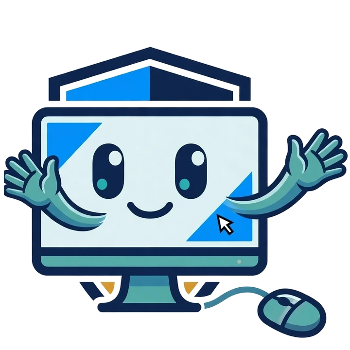

DeskGuest
DeskGuestEverything DeskGuest does
One product, two installs per platform, nothing held back for a paid tier — there isn't one. This page walks the whole product, family by family.
Presence & consent — the heart of it
Help can only happen while you can see it. Three things are on your screen for every session, and nothing — no setting, no policy — can turn them off.
The Box
A banner names exactly who is connected — a person or a named AI agent — what they are doing, and carries a red STOP button that always works.
The Ghost
Your helper's pointer is a ghost: a ring carrying their initial, never confused with your own cursor. You watch every move as it happens.
The Glow
A soft edge of light around your screen while a session is live, so a connection is visible even from across the room.
You can take back control
Touch your mouse or keyboard and you're driving again — your helper's pointer dims and waits. How that hand-off behaves (take over, share, or hotkey only) is your setting, chosen on your device. And while you've taken over — for a login, say — all capture suspends: the record shows a takeover happened, never what it contained.
Approvals before actions
Anything that matters — sending a file, changing a setting, running a command — arrives as a clear action card. Your tap is the approval, and it's written into the session record.
Background Work Only
Mid-session, you can hold all screen work with one toggle. Your helper keeps doing permitted background work, the held items are counted where you can see them, and the banner stays up.
A face you can recognise
Every helper — person or AI — has a name and a face that ride along with their pairing. You learn to recognise your helper the way you recognise a voice on the phone.
A running commentary
A persistent activity line states in plain words what your helper is doing as they act, and a ripple marks every touch as it lands. Session sounds announce the start and the end — a session never begins or ends silently.
STOP lives everywhere
The session is mirrored in your notification area for its whole duration, with elapsed time and who's acting — and session state with a one-tap STOP sits on your home screen and quick settings too. You never have to hunt for the exit.
Every display accounted for
On a machine with several screens, DeskGuest inventories them all, and the presence layer marks which display is being driven. Help happens on the screen you can see it on.
Sensitive surfaces ask for more
On screens you mark sensitive, the banner persists and the session requires an unlocked, screen-on device for the duration of the action. And in a moving vehicle, screen driving is refused outright — voice-grade interaction only.
Many ways to connect — chosen automatically
DeskGuest sets up its own connections. It tries the most direct road first, steps down to the next when a road is blocked, and steps back up when the better road returns. The road in use is always shown, honestly.
Same network
Direct, device to device, on your own Wi-Fi or office network. Nothing leaves the building.
Across the internet
Direct where your connection allows it; otherwise through sealed relays that can carry a session but can never read one.
Your own hub
Run the optional hub on a machine you own and your devices can always find each other through it — still sealed, still yours.
It heals itself — and proves it
After a reboot and your unlock, the device restores its own connection, then verifies its health and reports green, amber, or red in plain words. Across its first reboots it measures its own survival and reports the result instead of assuming. If a link can't heal itself, you get exactly one notification naming the exact action that clears it.
Dead-zone mode
No internet at all? DeskGuest says so, and works the roads that remain — your local network and direct paths — as a named, tested mode. A path that's down reports DOWN, with its reason. Never a hang, never a pretend connection.
Wake before you connect
A sleeping device on your network can be woken for a session, and roads you build yourself — your own tunnel, your own addresses — are first-class citizens beside the built-in ones. Your devices find their connection points by listening on-device; no external scanning exists anywhere in the product.
There are also privacy-heavy options (a swarm phone-book that finds devices without any server knowing the list, and a Tor road) and, for people who already have one, their own mesh network. Switching roads never means pairing again. How the sealing works
Quick Fix — help for anyone, in seconds
For the "my computer is doing something weird" moments, there is a tiny separate app: DeskGuest: Quick Fix.

One linkClick and you're talking
One invite link opens a session in the browser — voice, chat, screen sharing. No download, no account, no codes read aloud.
 One more tap
One more tapLet them take over
When watching isn't enough, one tap brings in a one-time helper program for full control — under the full presence rules.
It removes itself
When the session ends, the helper program deletes itself and the link dies. Nothing is left behind, ever. Quick Fix can never be used to reach a device unattended.
Quick Fix, in full — the two ways in, the anti-scam design, and the helped person's rights
Rooms & live collaboration
Fixing a machine? Start a session. Gathering people? Host a room.
Sessions
The live event, on one device: screen, voice, chat, file transfer, and — when the owner allows — control. People and AI agents can join the same session, each under their own name and permissions.
Rooms
A standing meeting place owned by a group: named members, one standing invite link, and a memory — session records, notes, transcripts, and receipts are filed in the room where they happened.
Working side by side
Two drivers can work at once, each with their own named ghost pointer, and everything either of them does is attributed to them in the record. An AI can also join just to watch, take notes, and point things out — without driving.
A receipt for the person helped
After every session, a plain-language summary is left on the helped device — who was here, what they did, in that device's language. Help leaves a paper trail the helped person can read.
Your AI, working beside you
DeskGuest has no AI of its own — you pair yours. The agent you already use connects as itself, under its own name and face, and works inside the same presence, approvals, and STOP as any human helper. The AI arrangement, in full
Bring your own agent
Any standards-based agent can pair — the control surface is the open MCP standard, and no agent is privileged by vendor. Pairing is always your manual act, with a one-time code; an agent can never pair itself or widen its own access.
The leash
You set what each agent may do — look only, full control, or a custom mix of observe, drive, shell, and admin — per pairing, changeable any time. New pairings start at look only. Sensitive actions still stop and ask, in every mode.
Orders you approve
Chat with your agent inside DeskGuest and tell it what you want. Action arrives as a structured card you approve with one tap — free text never executes. From your phone, you can direct an agent working on another device entirely; presence fires there in full, and you hold a remote STOP.
It sees structure, not just pictures
Your agent reads the screen as a tree of labelled elements and acts by reference — a stale reference fails rather than guessing a tap. It can follow a session on a live feed, point things out without driving, and read a screen into structured data. Apps you mark invisible stay invisible to it entirely.
It speaks, if you want it to
Paired agents can speak and listen in a session. The default voice is built in and local — it works offline and phones nothing home. You can give each agent its own voice pack, and an agent that brings its own voice is labelled as doing so.
Groups, devices & your fleet
Your devices find each other by introduction, not by account. Everything you own syncs — your device list, groups, profile, and settings — sealed, over the same connections.
Your circle
Your own devices form a private circle. Add a device once, from a device you already trust, and it belongs.
Groups
Family, a workplace, a customer site — each group has its own members, its own sealing, and its own admins. Groups can't read each other.
The endpoint never sees the fleet
A device you help sees only the people and agents paired to it. Your other devices and groups are not listed there — they aren't hidden, they're absent.
Add a device by ID + code
A new device shows its own ID and a one-time code — ten minutes, single use, never a standing password. From inside a group, on any of your devices, "Add device" joins it: one act makes it a member and pairs it.
Your devices sync — sealed
Your device list, groups, profile, settings, and customisation sync between your own devices over the same encrypted connections, with no account anywhere. Want an always-available copy? It lives as a sealed blob on your own hub, which cannot read it.
A device's job is chosen at setup
Installing asks one question: "What will this device do?" Help others, receive help with someone present, be reachable when nobody's here — combinable. An attended-only install carries no unattended pathway at all: the door doesn't exist, dormant or otherwise.
Before you connect
The operator sees a device's vitals first — disk, battery, a reboot waiting, health flags — before starting work. And a paired agent, at your request, can ring your phone at full volume even on silent, or put your words on its screen.
The workplace pack
The same product, run by an organisation: monitoring and alerts, patch management with approvals, inventory, backups, and evidence packs an auditor can read — every feature governed by signed policy, with an Effective Policy view that shows exactly what applies to any device. For Workplaces · For IT
Policy that can't be quietly changed
Settings flow from signed policy with inheritance. What a device actually runs under is one view away, and changes are audited.
Camera viewing, with manners
Standard security cameras can be viewed inside device groups — every view is permissioned, audited, and can be switched off by policy. Audio is off by default.
Offboarding in one action
Remove a person and you first see the full list of what changes — their access, their devices, their agent pairings — then confirm once.
Sign-in, the organisation's way
An organisation can gate key use behind its own sign-in system, on its own tenant, with its own multi-factor rules. DeskGuest still holds no account and receives nothing.
Vendor access that expires
Outside help gets a time-boxed grant: this vendor, these devices, until Thursday. Outside the window the access doesn't exist, and expiry is automatic and audited — nobody has to remember to take it back.
Automation, signed
Runbooks, scheduled missions, and script engines run under a signature policy: automation executes signed work, attributed and audited like everything else. Unsigned work doesn't run quietly — it doesn't run.
Billable time
Session time per site comes straight from the Activity Record — the same record the customer can inspect — and exports for invoicing. No stopwatch screenshots, no disputed hours.
Paperwork, your way
Evidence packs and reports can carry your organisation's logo and colours; alert thresholds and retention windows are yours to set. And a sole admin names a successor in advance, on a defined trigger — succession is planned, not improvised in a crisis.
Make it yours
Every part of DeskGuest can be tuned — and every tune is optional, with a sensible default, so nobody has to make a decision to get started.
Faces
Pick your face and your agents' faces from large built-in galleries — professional, modern, and fun — or upload your own. A paired AI's face is a safety feature: you learn to recognise your helper.
Pointers
Your helper's ghost pointer comes in galleries too — professional, minimal, and fun — recoloured per agent, with size and name-tag options.
Presence, your way
Banner size, glow intensity, border styles, sounds — all adjustable, within a floor that can't be crossed: presence is never invisible, the driver is always named, and STOP is always there.
Session feel
Picture quality versus smoothness, which screen is shared first, clipboard defaults, where received files land, and your own shortcuts for taking back control.
Arrange your world
Colour-code sites and groups, pin favourites, choose list density, pick which fields a device card shows, and tag devices your own way. Your console looks like your work, not like a demo.
Family mode
A named preset that collapses the whole product to the family-help shape: the fewest concepts, the largest targets, everything else hidden but present. Set it up once for a parent; they never meet the machinery.
Accessible by design
Generous touch targets, contrast floors, type that survives being scaled to 200%, and full screen-reader support in the app's own interface. The product follows each platform's own design language — and its dark theme is designed, not inverted.
Layers, so it never overwhelms
Every setting lives in Basics, Preferences, or Advanced fine-tune; settings are searchable, and every section resets independently. Company policy may pin or hide items for a fleet. The one thing no layer contains: the consent floor.
No account — and still a way back in
Losing every device you own shouldn't mean losing your digital life. DeskGuest gives you several independent doors back in; any one of them is enough.
Another of your devices
Any surviving device can welcome a new one in.
A recovery file
Sealed with a password only you know. Keep it anywhere — it's useless without the password.
A trusted person
Their device holds a sealed piece that opens nothing alone; restoring needs their tap of approval.
You can also split your way back into pieces kept in different places (any two of three restore you), or keep the classic word sheet. Settings always shows how many ways back in you have — and only nags when the answer is none.